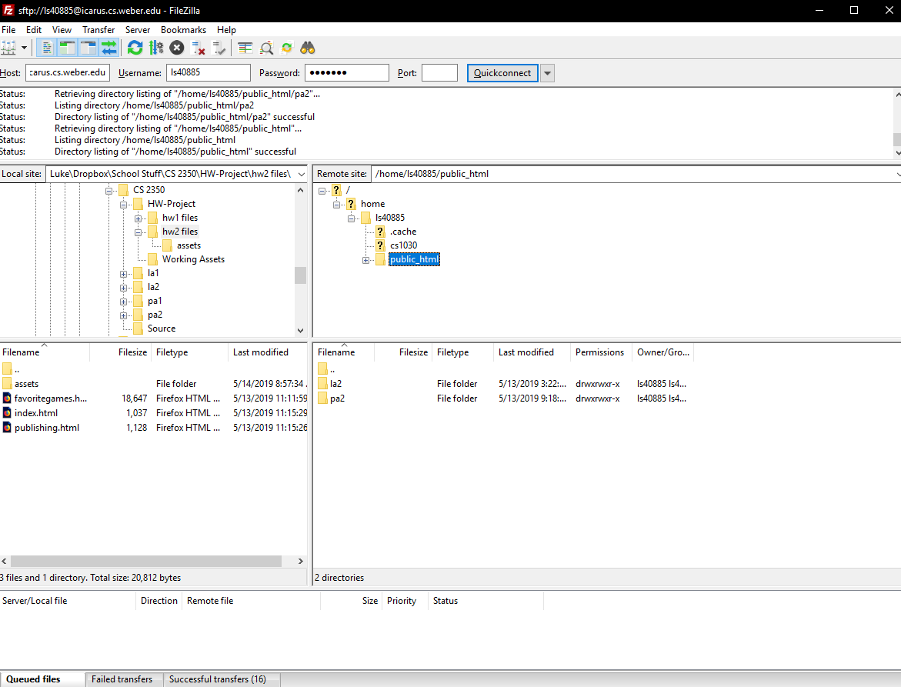

Publishing websites can be a tricky thing. And while publishing web sites on the internet usually requires you to setup a server, Weber State's school of Computer Science has set up an easy way to publish your own sites on the internet. Icarus is a linux based server that allows you to host websites through the server. Removing the hassle of having to setup your own server, along with finding a domain, among other things.
Uploading to the Icarus Web Server
While technically you could publish items to the Icarus server via a command line environment, that would require a understanding of Linux, and it is generally just easier to simply use a graphically based File Transfer Client (FTP Tool). While there are certainly many options for FTP tools out there, I personally use Filezilla as my FTP client. In Filezilla, to connect to an FTP server, it is really quite easy. First you need to enter a hostname of the FTP server, in this case that being Icarus. The full hostname is icarus.cs.weber.edu. Most of us a familiar with the .edu, that is the top level domain, with with .cs being a sub domain of .weber, and icarus is the device name. The next thing you need is your username and password. Specifically your login information for Icarus, for more information on this visit the technical support page. Filezilla will automatically pick the most secure protocol and that protocols port to connect to the FTP server, meaning you shouldn't need to enter in that information.
Once you are connected to the Icarus server with your FTP client, you will be able to see what is in your accounts folder. To publish your files, all you need to do is drag and drop as many files as you want from your own computer directory as you would be able to with your own file system, such as shift clicking multiple files. This includes folders and sub folders. All files you want to be published online can be placed inside the public html folder.
How to compose a URL connecting to your Icarus web pages
While I have talked a little about URL's when referring to hostnames. There are a few components to a URL to consider before being able to access content from your webpage. Following is a list of the different components of a URL for Icarus:
- The protocol (http://), this is the protocol that web browsers use to connect to a page. HTTP and HTTPS (with the S standing for secure) are the primary protocols for getting web pages
- The Hostname (icarus.cs.weber.edu) Like the hostname for logging into the FTP server, this hostname allows your web browser to connect to the web page server
- username (~ls40885) The username directs you to the specific directory with your public HTML folder, this is the same username as what you used to login to your FTP tool with.
- Path (/la2/) This is the path to your specific folder in which you want your link to go to, meaning you can have layers of folders if you want
- filename (learning.html), this is the actual name of the HTML file you want your link to take you to. If you leave this blank your browser will automatically try to go to an index page.
Example URLs
http://icarus.cs.weber.edu/~ls40885/
http://icarus.cs.weber.edu/~ls40885/pa2/wise.html
http://icarus.cs.weber.edu/~ls40885/la2/